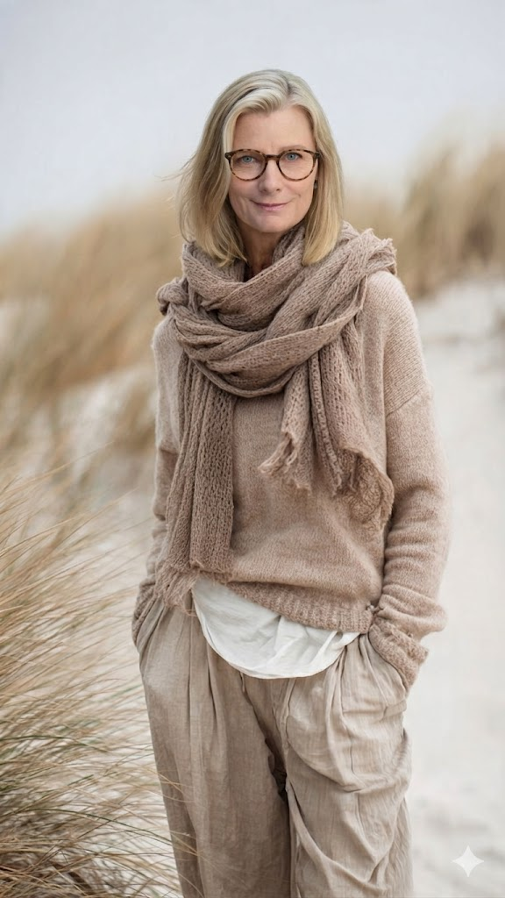

The Heart Behind the Practice

Hi, I�"m Laura.
I�"ve been teaching yoga and mindfulness for over 20 years. But honestly? My biggest lessons didn�"t come from trainings. They came from life.
From burnout. From saying yes for too long. From finally saying no more.
I know what it�"s like to feel stuck in a life that looks fine from the outside but quietly drains the life out of you. I�"ve felt the slow fade of losing yourself. And I also know what it takes to come back: to rebuild, reconnect, and create something new.
My path hasn�"t been linear (whose is?). I�"ve been a competitive athlete, a national swim coach, a single mom, a philosophy nerd, a spiritual seeker. And for a while, I lost sight of everything that mattered. I got caught in a world that rewarded pushing, performing, and pretending. I forgot what it felt like to breathe deeply, to feel grounded, to trust my own spirit.
Coming back to myself wasn�"t instant. It was a choice I had to make over and over again. But it changed everything.
The Shift off the Mat
For years of teaching, I have witnessed the exact same shift: A woman finishes class, soft, grounded, and fully in her body. Her whole face changes. There is a glow. A calm. A sense of finally feeling like herself again.
And then, before she even steps off the mat, I watch the tension start to creep back in. The daily lists. The noise. The expectations. The look that says, �SHere comes real life.⬝
That is exactly why I created Beyond the Bend. Not just as a weekly class, but as an anchor. A way to stay connected to that calm even after the mat is rolled up and the day begins pulling at your attention.
Permission to Slow Down
I�"ve trained in all the things: hatha, vinyasa, restorative, trauma aware mindfulness, somatic healing, meditation, Chinese medicine, and even shamanic practices. But the most important thing I bring to this space is presence.
No pedestals. No pretending. Just real respect for wherever you are, and a steady hand to walk with you from there.
Beyond the Bend is about coming home to yourself. Slowing down. Tuning in. Letting go of all the �Sshoulds⬝ and finding what actually feels true. There is no gold star here. No final destination. Just a quiet, powerful reminder:
You�"re not broken. You�"re becoming. You�"re welcome here, just as you are.
With warmth and gratitude,
Laura �x��
Explore The Sanctuary